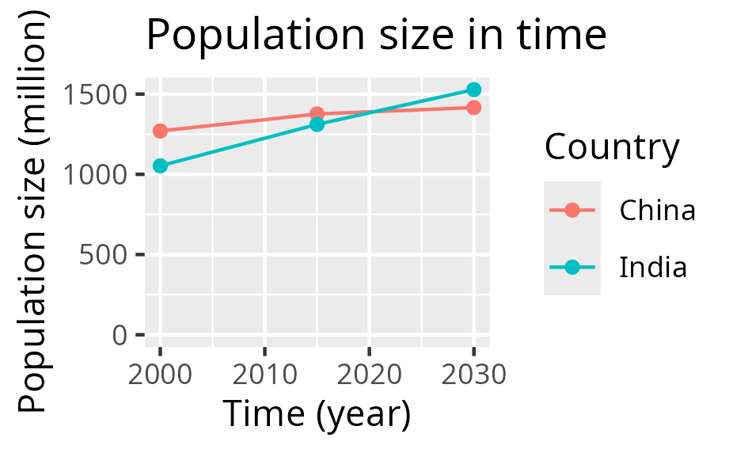
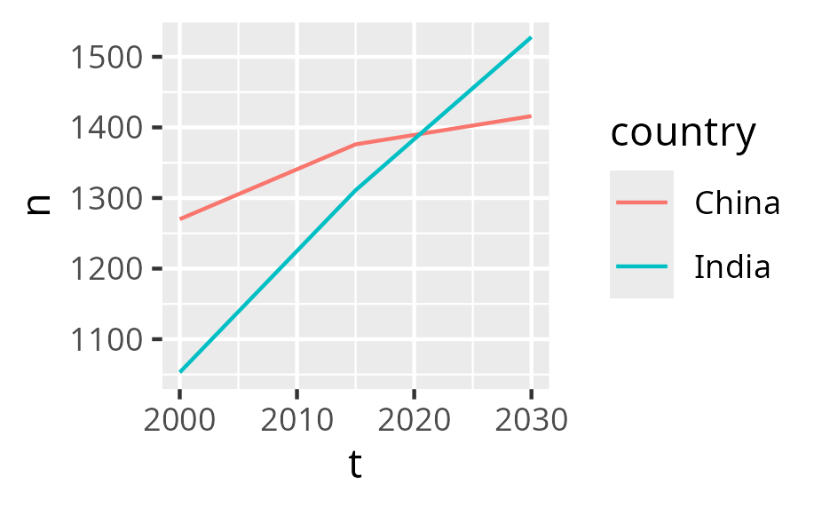

Create a plot¶
Learning outcomes
- Learners have created a plot from their data
- Learners have used the book 'R for Data Science' for things they need
For teachers
Teaching goals are:
- Repeat previous session
Repeat:
- What is
ggplot2? - What is
ggingplot2? - Why use
ggplot2for plotting? - In
ggplot2terminology, what is an aesthetics? - In
ggplot2terminology, what is a geometrical objects?
Prior question:
- .
Goal of today¶
To create a plot from your data.
Prefer a video?
Could you give an example?
From this data ...
| Country | 2000 | 2015 | 2030 |
|---|---|---|---|
| China | 1270 | 1376 | 1416 |
| India | 1053 | 1311 | 1528 |
and some R code to create this figure ...

after which the figure (as an SVG) can be worked upon in other tools.
A typical project visualization¶
You want to visualize past and predicted population size by country, using the data from the Wikipedia article 'World population'
These are the steps:
- 1. Preparing the data
- 2. Reading the data
- 3. Tidying the data
- 4. Cleaning the data
- 5. Saving the plot
- 6. Refine
1. Preparing the data¶
You (wisely) decide to start with only a subset of the data from the Wikipedia article 'World population':
| Country | 2000 | 2015 | 2030 |
|---|---|---|---|
| China | 1270 | 1376 | 1416 |
| India | 1053 | 1311 | 1528 |
From the context, you understand that:
- the columns with numbers (e.g.
2000) is the years - the values in the cells are the estimated population size, in millions
This data is best saved as a comma-separated (.csv) file.
If your data is in a spreadsheat (e.g. Calc or Excel),
you can typically export your data as a (.csv) file.
2. Reading the data¶
When the data is saved as a .csv file called
introduction_2.csv,
you can read this data in R like this:
Now you data is in a table called t.
Reading the data is described in Chapter 7: Data Import.
3. Tidying the data¶
The data must be transformed to be tidy, which holds these features:
- Each variable is a column; each column is a variable.
- Each observation is a row; each row is an observation.
- Each value is a cell; each cell is a single value.
Our data is not tidy yet:
| Country | 2000 | 2015 | 2030 |
|---|---|---|---|
| China | 1270 | 1376 | 1416 |
| India | 1053 | 1311 | 1528 |
Our data is not tidy yet, as we have three observations per row:
- The population in each in the year 2000
- The population in each in the year 2015
- The population in each in the year 2039
In R, we can make this tidy in many ways, for example:
Now the data is tidy like this:
| Country | name | value |
|---|---|---|
| China | 2000 | 1270 |
| China | 2015 | 1376 |
| China | 2030 | 1416 |
| India | 2000 | 1053 |
| India | 2015 | 1311 |
| India | 2030 | 1528 |
Transforming the data is described in:
4. Cleaning the data¶
We need to clean the data, as plotting the data as such will fail:
We do some data transformations:
Now the data looks like:
| country | t | n |
|---|---|---|
| China | 2000 | 1270 |
| China | 2015 | 1376 |
| China | 2030 | 1416 |
| India | 2000 | 1053 |
| India | 2015 | 1311 |
| India | 2030 | 1528 |
Plotting this now works:
5. Saving the plot¶
After having plotted the plot, it can be saved as such:
6. Refine¶
The plot looks like this now:

You can refine it in many ways:
- Refine the SVG in another tool
- Refine the generation of the plot
For example, in R:
ggplot(t, aes(x = t, y = n, color = country)) +
geom_line() +
geom_point() +
scale_x_continuous("Time (year)") +
scale_y_continuous("Population size (million)", limits = c(0, NA)) +
labs(title = "Population size in time", color = "Country")
Now the plot has proper labels:
Refining the looks of your plot is described in:
As there is so much to tweak, you definitely need to search the web and/or use an AI.
Exercises¶
Exercise 1¶
Create the plot you need for this course. Follow the steps at the 'A typical project visualization' section. Read the chapters if needed and/or search the web and/or use an AI to get what you need.
Done?¶
Well done!
Please fill in the evaluation form :-)
Then it is time to continue on your project again. Good luck!